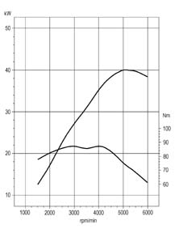
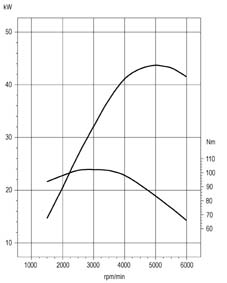
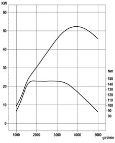

SPECIFICATIONS
- Path
- Technical Data > Project description and specifications > ENGINE TYPICAL CURVES > SPECIFICATIONS
- Kind
- technical data / specifications
- Applies to
- all engines; all production periods
- Interactive page
- https://sloeber94.github.io/elrnDB-fPnd/en/#/2751193
Applies to: all engines; all production periods
The power and torque curves illustrated can be obtained with the engine overhauled and run in (50 hours operation) without a fan and with an exhaust silencer and air filter fitted, at sea level.
1.1 8v

1.2 8v - 1.2 8v 4x4

1.3 Multijet
